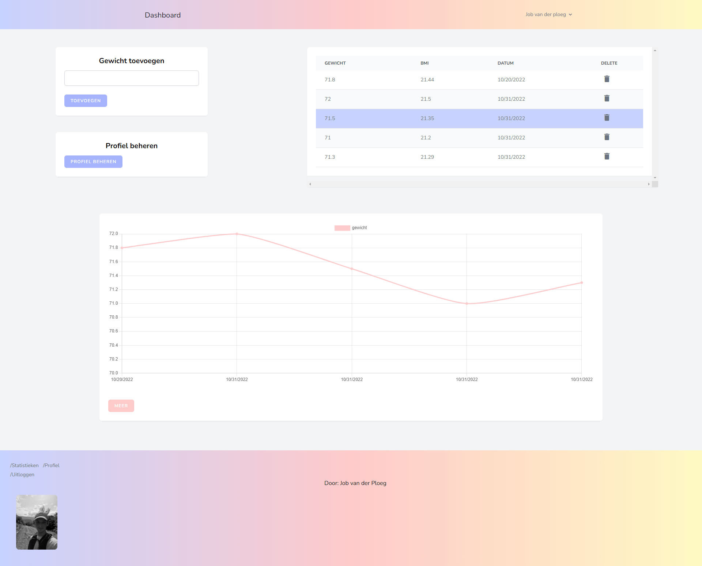

Gewicht tracker
Ik wilde in de vakantie mijn kennis van laravel opfrissen. Precies op dat moment vroeg mijn moeder of ik niet een gewicht tracker website zou kunnen maken. Ze is bezig met afvallen en wilde haar gewicht kunnen bijhouden. Daarvoor heb ik een website gemaakt met Laravel!
Technieken
Dit zijn de talen en technieken die ik heb gebruikt:
- Laravel
- Breeze (voor de login)
- tailwind
- Chart.js
Het belangrijkste was dat ik mijn laravel kennis wilde opfrissen. Dit is goed gelukt!
De website
De website heeft verschillende functionaliteiten. Als bezoeker kun je registreren of inloggen. Als je dit hebt gedaan kom je op je dashboard. Hier kun je je gewicht invullen. Als je dit gedaan hebt zie je dit meteen
terug in een grafiek. Verder wordt je BMI ook meteen berekend. Dit kun je terugzien in de tabel of grafiek.
Verder is er de optie om je profiel aan te passen. Hier kan je een profielfoto toevoegen en je gewicht bewerken.
De website wordt gehost op mijn eigen server. Dit is de gratis cloudserver van Oracle. De database wordt ook gehost op de server. De website draai ik via een docker container.
Conclusie
Ik vondt dit een leuk en leerzaam project. Als ik het project nu zou maken zou ik wel wat dingen anders doen. Ik zou nu veel betere en efficiëntere code schrijven. Desondanks ben ik heel blij met het resultaat!
